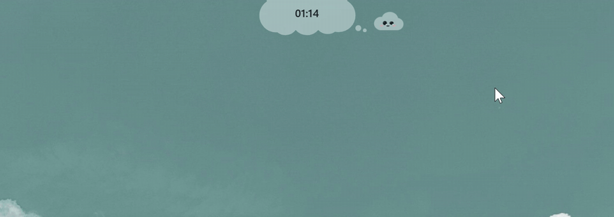
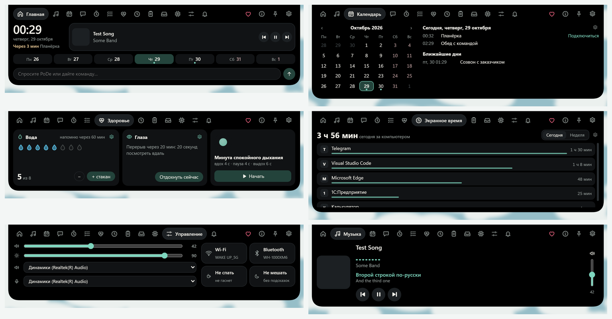

Остров вверху экрана для Windows
PoDee живёт у верхнего края экрана: показывает часы и музыку, слушает голос, отвечает в чате и подсказывает, что сейчас делает Claude Code. Рядом сидит облачко PoDy и следит глазами за мышкой.

Что умеет PoDee
Бесплатный для всех. Windows 10 и 11.
🎵
Музыка
Обложка, кнопки и текст песни в такт, из любого плеера.
🎙️
Голос и чат
Скажите «открой Телеграм», и он откроется. Остальное спросите у ИИ: Claude, ChatGPT, Gemini.
🗓️
Календарь
Google, Outlook или любая iCal-ссылка. Ближайшая встреча видна под часами.
🤖
Claude Code
Что агент делает в терминале, его вопросы «разрешить?» и сколько осталось лимита.
💧
Здоровье
Вода за день, отдых для глаз 20-20-20 и минута дыхания.
🧩
Виджеты и док
Свой док с живыми превью окон и виджеты на рабочем столе.
